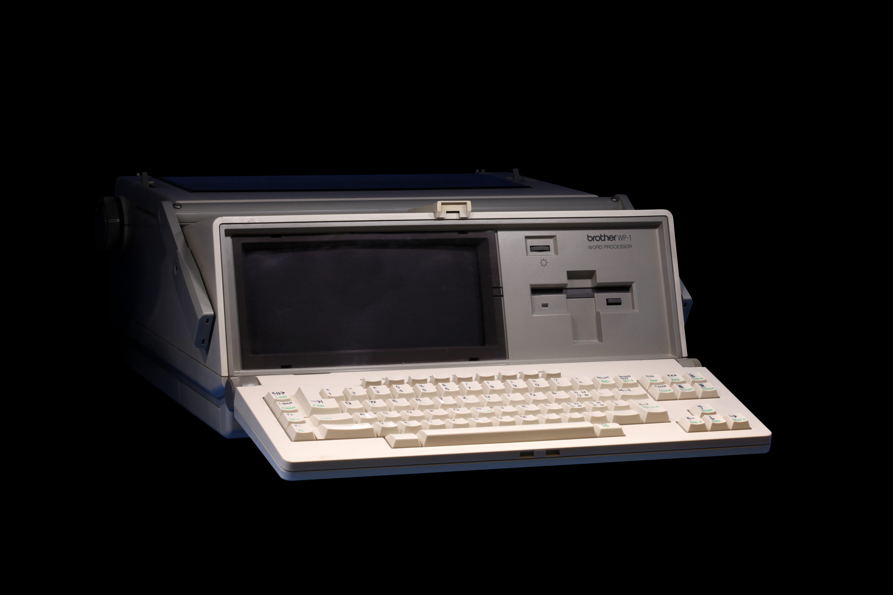
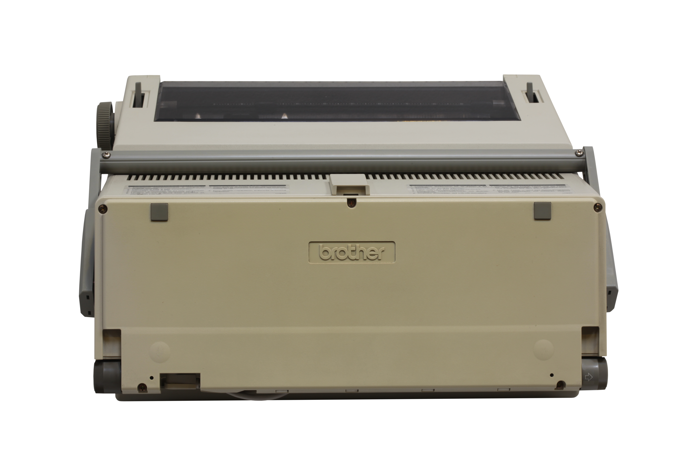

Brother WP1 Word Processor / Electronic Typewriter
The typewriter that made you edit before you printed

Overview
The Brother WP1 is a portable word processor / electronic typewriter from Brother Industries, combining a QWERTY keyboard with a multi-line liquid crystal display and an integrated print mechanism. It is one of the fully realized realizations of the 'word processor in a typewriter' idea: text is composed and edited on the LCD before it is committed to paper, rather than the typewriter model where each keystroke immediately prints.
With a multi-line LCD editing screen, the WP1 lets the user review and correct lines and paragraphs in memory, apply word-wrap and formatting, and save documents to built-in memory before printing them. This is the edit-before-print interaction made concrete: composition happens in the digital, on-device domain; materialization on paper is a separate, deliberate step. It is a direct descendant of the earlier Brother EP-20 (1982), the earliest single-line edit-before-print portable, but the WP1 upgrades to a genuinely multi-line screen and built-in document storage.
Brother was a major producer of this category, which spanned the early single-line LCD portables (EP series) through the larger multi-line word processors (WP series) and into the daisy-wheel machines. The WP1 is preserved in museum collections; a set of quality photographs exists on Wikimedia Commons from the Musée Bolo at EPFL in Lausanne.
Deep dive
On a mechanical or electric typewriter, keystroke equals ink: every keypress immediately commits a character to paper, and correction is a physical act of erasing or cover-up. The WP1 breaks that bond. You type into an electronic buffer you can see on the LCD, fix mistakes before any paper is wasted, and only commit the finished text to print deliberately. It is the same conceptual break that made the word processor feel like a different kind of machine from the typewriter, packaged into a self-contained desktop object.
The WP1's multi-line LCD is the heart of its interaction: the display is where the writing actually happens, and the print head is a downstream 'publish' step. Words wrap on screen, edits rewrite the buffer, and the user reads and re-reads before printing. This is the 'brains replace the dial' story applied to the typewriter — the physical output becomes optional and deferred, controlled by the state of a small screen.
The WP1 is a descendant of the Brother EP-20 (1982), the earliest portable that inserted a single-line 16-character LCD buffer between keystroke and print. The WP-series machines extended this to full multi-line editing and built-in document memory. This lineage — from one-line correction to full on-device word processing — is the museum-worthy arc of how the typewriter became a computer with a screen.
Team & pioneers
- Brother Industries. Manufacturer of the WP1 and the broader electronic typewriter / word processor line
Media
